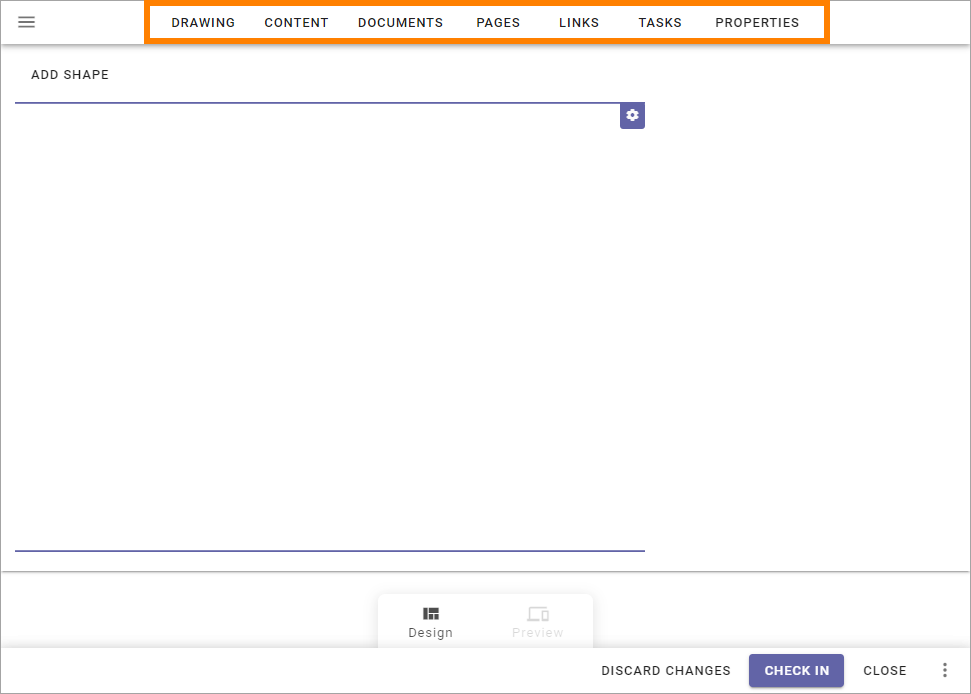

Using the workspace for processes¶
You use the tabs when working with the process or a process step:
All tabs are available for all process steps. Regarding Properties, you set them for the whole process.
Here’s a short overview of what to use the tabs for:
Drawing: Here you work with the graphic presentation of the process, which can also serve as a navigation of the process. You can visualize the process and the process steps by adding shapes and/or upload an image and add clickable areas to that image.
Content: Use this tab to add a description of the process or process step. You can usually use both text and images to do that.
Documents: You use this tab create a list of documents relevant to the process or process step, documents that users can read.
Pages: You use this tab create a list of pages relevant to the process or process step, pages that users can read.
Links: Here you can add useful links for users, for the process or process step.
Tasks: Use this tab to work with a To Do-list for the process or process step. Note that this is not Sharepoint Tasks, just a To Do list.
Properties: You use this tab to set the properties for the process. Available for the main level, the process, only.
See these pages for more information:
Design mode or Preview mode¶
You can use two different modes when working with a process; Design mode for editing the process or a process step, and Preview to see what it will look like for users. You switch between the modes here:

See this page for more information about the preview: Preview a process